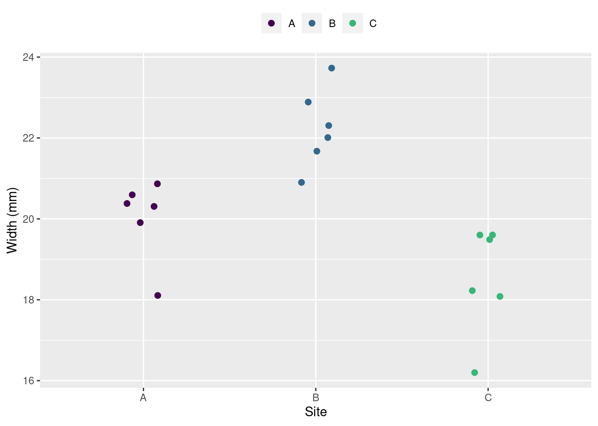
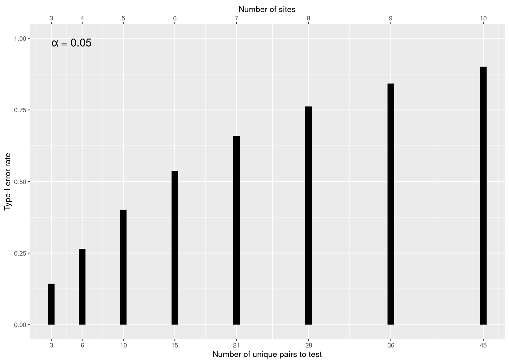
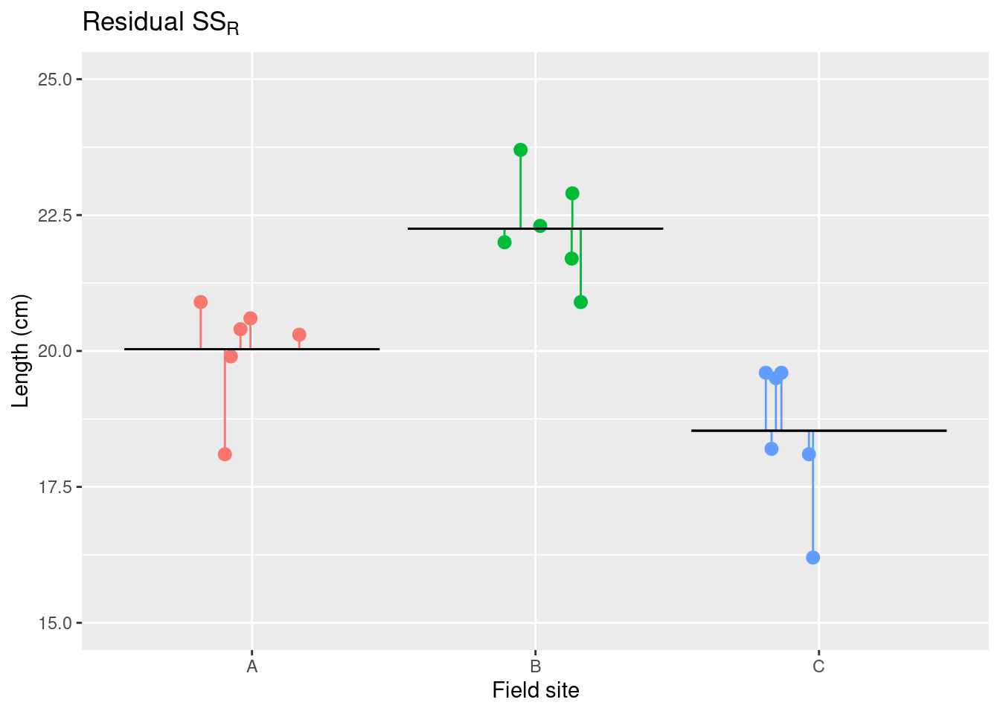
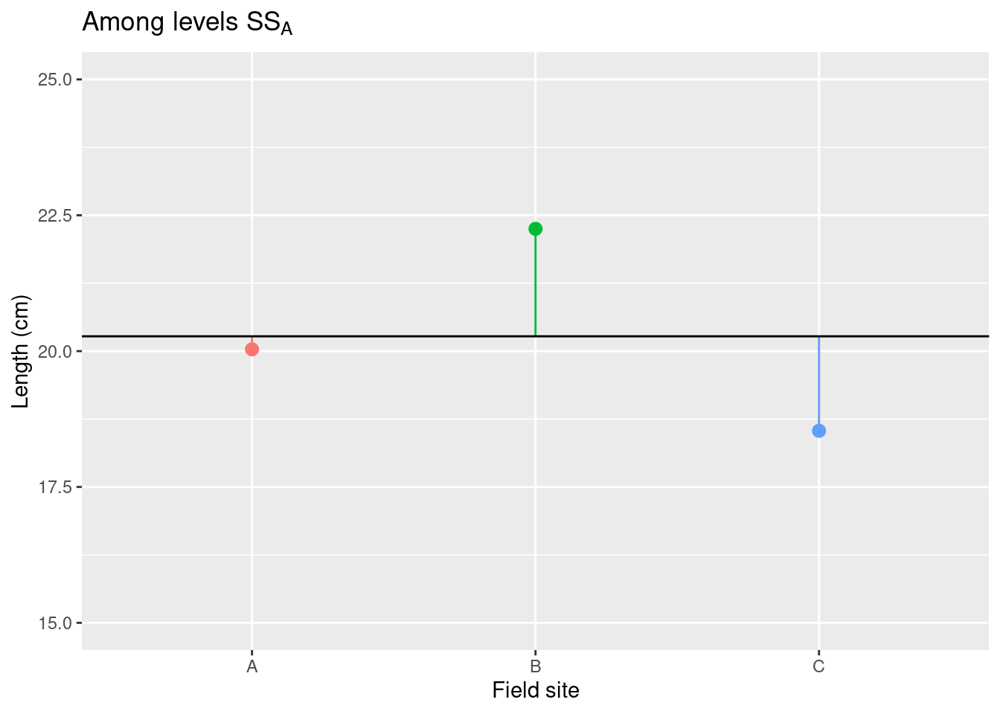
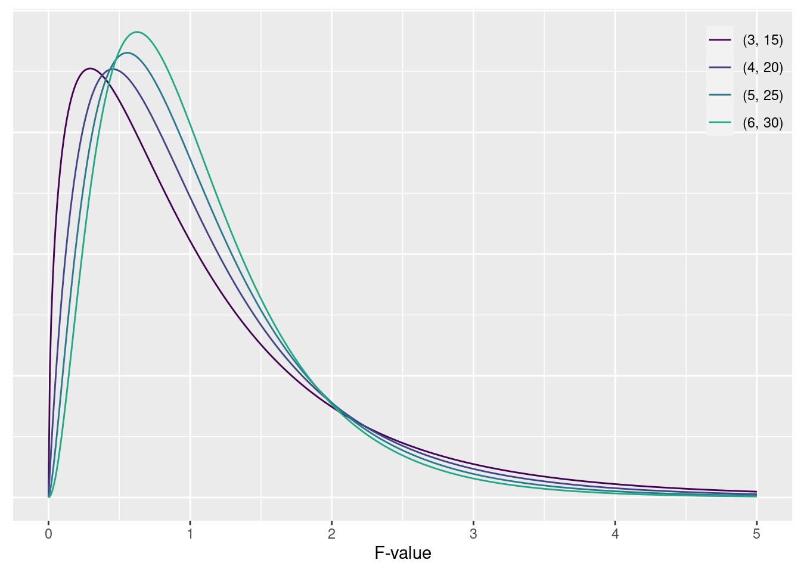

set.seed(2021) # 疑似乱数のシードを設定する
nA = 6 # サンプル数を決める
nB = 6
nC = 6
meanA = 20 # 真の平均値
meanB = 22
meanC = 18
sigmaA = 1 # 真の標準偏差
sigmaB = 1
sigmaC = 1
siteA = rnorm(nA, meanA, sigmaA) |> round(1) # データを発生する
siteB = rnorm(nB, meanB, sigmaB) |> round(1)
siteC = rnorm(nC, meanC, sigmaC) |> round(1)
# tibble を組み立てる
dset = tibble(g = c("A", "B", "C"), data = list(siteA, siteB, siteC)) |>
unnest(data) |>
mutate(g = factor(g))一元配置分散分析
Comparing multiple groups with ANOVA
Note
解析の紹介に使った疑似データは次のようにつくりました。
ノコギリモク (Sargassum macrocarpum) の疑似データ
| Sample | Site A | Site B | Site C |
|---|---|---|---|
| 1 | 19.9 | 22.3 | 18.2 |
| 2 | 20.6 | 22.9 | 19.5 |
| 3 | 20.3 | 22.0 | 19.6 |
| 4 | 20.4 | 23.7 | 16.2 |
| 5 | 20.9 | 20.9 | 19.6 |
| 6 | 18.1 | 21.7 | 18.1 |
Note
ノコギモクの大きさは Table 1 に示しています。 サンプルは 3 箇所（3群）から採取しました。 各サンプルに個体数番号もふっています。
データは 上のノートに紹介したコードで発生しました。
データの可視化
ggplot(dset) +
geom_point(aes(x = g, y = data, color = g),
size = 2,
position = position_jitter(0.1)) +
scale_color_manual("", values = viridis::viridis(4)) +
labs(y = "Width (mm)", x = "Site") +
theme(legend.position = "top")
各サイトの平均値 (\overline{x}), 標準偏差 (s), と標準誤差 (s.e.) は、
- \overline{x}_A= 20; s_A= 1; s.e. = 0.41
- \overline{x}_B= 22.2; s_B= 0.97; s.e. = 0.4
- \overline{x}_C= 18.5; s_C= 1.34; s.e. = 0.55
仮説を決める
Important
解析する前に作業仮説、帰無仮説、対立仮説を設定する必要があります。
Working hypothesis
作業仮設: ノコギリモクの大きさは採取した場所によって異なる。
- 記述統計量によって、平均値以外の統計量（標準偏差と標準誤差）は似ています。
- \overline{x}_A= 20; s= 1; s.e. = 0.41
- \overline{x}_B= 22.2; s= 0.97; s.e. = 0.4
- \overline{x}_C= 18.5; s= 1.34; s.e. = 0.55
帰無仮説と対立仮説
統計学的に解析するための帰無仮説と対立仮説を決めます。
- H_0 (null hypothesis 帰無仮説・ヌル仮説): ノコギリモクの大きさは場所によって異ならない
- H_A (alternative hypothesis 対立仮設): ノコギリモクの大きさは場所によって異なる
ナイーブな ペア毎の t 検定
とりあえず、場所のペア毎の t 検定を実施します。 このとき、3 つの帰無仮説が必要なので、(hypothesis?) と違います。
- H0,A-B: Site A と Site B の大きさは同じ
- H0,A-C: Site A と Site C の大きさは同じ
- H0,B-C: Site B と Site C の大きさは同じ
では、それぞれの t 検定を実施します。
Site A and B の t 検定
resultAB = dset |> filter(!str_detect(g, "C"))
resultAB = t.test(data ~ g, data = resultAB)
resultAB
Welch Two Sample t-test
data: data by g
t = -3.8886, df = 9.9893, p-value = 0.003022
alternative hypothesis: true difference in means between group A and group B is not equal to 0
95 percent confidence interval:
-3.486976 -0.946357
sample estimates:
mean in group A mean in group B
20.03333 22.25000 t値は -3.889、P値は 0.003 です。 0.003 \le 0.05 なので、帰無仮説は棄却できます。
Site A and C の t 検定
resultAC = dset |> filter(!str_detect(g, "B"))
resultAC = t.test(data ~ g, data = resultAC)
resultAC
Welch Two Sample t-test
data: data by g
t = 2.1968, df = 9.2717, p-value = 0.05477
alternative hypothesis: true difference in means between group A and group C is not equal to 0
95 percent confidence interval:
-0.03773888 3.03773888
sample estimates:
mean in group A mean in group C
20.03333 18.53333 t値は 2.197、P値は 0.0548 です。 0.0548 \ge 0.05 なので、帰無仮説は棄却できません。
Site B and C の t 検定
resultBC = dset |> filter(!str_detect(g, "A"))
resultBC = t.test(data ~ g, data = resultBC)
resultBC
Welch Two Sample t-test
data: data by g
t = 5.5063, df = 9.1228, p-value = 0.0003595
alternative hypothesis: true difference in means between group B and group C is not equal to 0
95 percent confidence interval:
2.192862 5.240472
sample estimates:
mean in group B mean in group C
22.25000 18.53333 t値は 5.506、P値は 0.0004 です。 0.0004 \le 0.05 なので、帰無仮説は棄却できます。
t検定の結果をまとめました。
| Pair | Difference | t-value | P-value | d.f. | 95% CI | Is P ≤ 0.05? |
|---|---|---|---|---|---|---|
| B-A | -2.216667 | -3.888623 | 0.0030224 | 9.989348 | -3.487 to -0.95 | Yes |
| C-A | 1.500000 | 2.196821 | 0.0547748 | 9.271711 | -0.038 to 3.04 | No |
| C-B | 3.716667 | 5.506257 | 0.0003595 | 9.122821 | 2.193 to 5.24 | Yes |
d.f. は Welch-Satterthwaite 式で求めた自由度1、95% CI は 95% 信頼区間です。
1 degrees-of-freedom
第１種の誤り (accepting a false H0)
第１種の誤り
H0 が FALSE のときに帰無仮説を棄却できなかった誤りです。
t 検定を 1 回実施したときの誤りは
\text{Type I error rate} = \alpha = 0.05
t 検定を 2 回実施したときの誤りは
1 - (1 - \alpha) \times (1 - \alpha) = 1 - (1-\alpha)^2=0.0975
t 検定を 3 回実施したときの誤りは
1 - (1 - \alpha) \times (1 - \alpha) \times (1 - \alpha)= 1 - (1-\alpha)^3=0.142625
t 検定を h 回実施したとき、第１種の誤りは 1 - (1-\alpha)^h です。
群が増えると大変なことなる
n 群のサンプルの全ペア毎の比較がしたい場合、 h のペア (k = 2) が存在します。
h = \binom{n}{k}=\frac{n!}{k!(n-k!)}
ペア毎の h の数を求める式は次のようになります。
h = \binom{n}{2}=\frac{n!}{2!(n-2!)} = \frac{n(n-1)}{2}
例えば、5 site の場合、10 のペアが存在します。 ペア毎の t 検定をしたら、第１種の誤りは
1 - (1-0.05)^{10}=0.4012631
R での求め方
alpha = 0.05 # 有意水準
k = 2 # ペアだから 2
n = 5 # 比較する群・場所・グループの数
h = choose(n, k) # ペアの数
1 - (1 - alpha)^h # 第１種の誤り[1] 0.4012631Warning: Using `size` aesthetic for lines was deprecated in ggplot2 3.4.0.
ℹ Please use `linewidth` instead.
一元配置分散分析
One-Way ANOVA (一元配置分散分析)
複数群（因子の水準）の解析は 一元配置分散分析)2 用います。
2 One-Way ANOVA (One-Way Analysis of Variance
3 factor
4 level, factor level
分散分析の帰無仮説は、
\mu_1 = \mu_2 = \cdots = \mu_i
つまり、一つの検定で複数群の平均値を同時に解析するから、第１種の誤りは 0.05 に抑えられる。
分散分析のモデル式は次のように表せます。
x_{ij} = \mu_i + \epsilon_{ij}
水準 i とサンプル j の値は x_{ij}です。 水準 i の平均値は \mu_i です。 モデルの残渣[residual]または誤差項[error term]は \epsilon_{ij} です。
一元配置分散分析表
| Factor | Degrees-of-freedom (df) | Sum-of-Squares (SS) | Mean-square (MS) | F-value | P-value |
|---|---|---|---|---|---|
| A | $df_A = I-1$ | $SS_A$ | $MS_A = SS_A / df_A$ | $MS_A / MS_R$ | $qf(1-α, df_A, df_R)$ |
| e | $df_R = I(J-1)$ | $SS_R$ | $MS_R = SS_R / df_R$ | ||
| $df_T =IJ-1$ | $SS_T$ |
- 因子は A5
- 残渣は e6
- 水準数は I7
- サンプル数は J8
- 水準間平方和は SS_A9
- 残渣平方和は SS_R10
- 総平方和は SS_T11
- 水準間平均平方は MS_A12
- 残渣平均平方は MS_R13
- F値14は MS の比です。
5 factor
6 residual
7 number of levels
8 number of samples
9 among levels sum-of-squares (SS)
10 residual SS
11 total SS
12 among levels mean square (MS)
13 residual mean square (MS)
14 F-value
平方和の方程式
\underbrace{\sum_{i=1}^I\sum_{j=1}^J(x_{ij} - \overline{\overline{x}})^2 }_{\text{総平方和}\;(SS_T)} = \overbrace{J\sum_{i=1}^I(\overline{x}_{i}-\overline{\overline{x}})^2}^{\text{水準間平方和}\;SS_A} + \underbrace{\sum_{i=1}^I\sum_{j=1}^J(x_{ij} - \overline{x}_i)^2}_{\text{残渣平方和}\;SS_R}
標本平均は \bar{x}_i、総平均は \bar{\bar{x}} です。
Decomposing the sum-of-squares


分散分析の統計量
F = \left . \frac{SS_A}{I-1} \right / \frac{SS_R}{I(J-1)} = \frac{SS_A}{SS_R} \frac{I(J-1)}{I-1} = \frac{MS_A}{MS_R}
F値は 自由度 \text{df}_1 = I-1, \text{df}_2 = I(J-1) のF分布に従います。 水準の数は I、水準ごとのサンプルの数は J です。
16 denominator
15 numerator
F値の確率密度関数
P(x|\text{df}_1, \text{df}_2) = \frac{1}{\mathrm{B}\left(\frac{\text{df}_1}{2}, \frac{\text{df}_2}{2}\right)}\left(\frac{\text{df}_1}{\text{df}_2}\right)^{\left(\frac{\text{df}_1}{2}\right)}x^{\left(\frac{\text{df}_1}{2}-1\right)}\left(1+\frac{\text{df}_1}{\text{df}_2}x\right)^{\left(-\frac{\text{df}_1+\text{df}_2}{2}\right)} \mathrm{B}(\text{df}_1, \text{df}_2)=\int_0^1t^{x-1}(1-t)^{y-1}dt は ベータ関数17 といいます。 \text{df}_1 と \text{df}_2 は自由度、x は確率変数です。
17 Beta function

一元配置分散分析表の仮定
分散分析するときに注意する仮定
18 continuous
19 discrete
Rにおける解析
解析例に使うデータは thedata.csv に保存したので、まずは読み込みます。
# Read data from a csv file
dset = read_csv("thedata.csv")データをグループ化したあと、最初の 2 行を表示する。
dset |> group_by(site) |> slice(1:2)# A tibble: 6 × 2
# Groups: site [3]
site obs
<fct> <dbl>
1 A 19.9
2 A 20.6
3 B 22.3
4 B 22.9
5 C 18.2
6 C 19.5帰無仮説を当てはめる。
nullmodel = lm(obs ~ 1, data = dset) # 帰無モデル、ヌルモデルフルモデル（対立仮説）を当てはめる。
fullmodel = lm(obs ~ site, data = dset) # 対立モデル、フルモデル分散分析の結果
帰無仮説と対立仮説のモデル結果を用いた方法。
anova(nullmodel, fullmodel, test = "F")Analysis of Variance Table
Model 1: obs ~ 1
Model 2: obs ~ site
Res.Df RSS Df Sum of Sq F Pr(>F)
1 17 60.656
2 15 18.702 2 41.954 16.825 0.0001471 ***
---
Signif. codes: 0 '***' 0.001 '**' 0.01 '*' 0.05 '.' 0.1 ' ' 1F値は 16.825、自由度は df1 = 2 と df2 = 15 です。 よって、P値は 0.000147 です。 有意水準が \alpha = 0.05 、自由度が (2, 15) のときのF値は 3.682.
フルモデルの結果でけ用いた解析
anova(fullmodel)Analysis of Variance Table
Response: obs
Df Sum Sq Mean Sq F value Pr(>F)
site 2 41.954 20.9772 16.825 0.0001471 ***
Residuals 15 18.702 1.2468
---
Signif. codes: 0 '***' 0.001 '**' 0.01 '*' 0.05 '.' 0.1 ' ' 1aov() 関数を用いた方法
このとき、lm() は不要です。
aovout = aov(obs ~ site, data = dset)
summary(aovout) Df Sum Sq Mean Sq F value Pr(>F)
site 2 41.95 20.977 16.82 0.000147 ***
Residuals 15 18.70 1.247
---
Signif. codes: 0 '***' 0.001 '**' 0.01 '*' 0.05 '.' 0.1 ' ' 1
Important
分散分析の帰無仮説は \mu_0 = \mu_1 = \cdots \mu_i なので、 ペア間の検定ではないです。
多重比較20
多重比較
分散分析の帰無仮説を棄却したら、ペア毎の比較がしたくなります。 第１種の誤りを抑える多重比較の検定は豊富に存在します。
- Bonferroni Procedure (ボンフェロニ法)
- Holm-Bonferroni Method (ホルム = ボンフェロニ法)
- Tukey’s Honest Significant Difference Test (テューキーの HSD 検定)
- Tukey-Kramer method, Tukey’s test
- Scheffe’s Method (シェッフェの方法)
- Dunnett’s Test (ダネットの検定)
- Fisher’s Least Significant Difference (フィッシャーの最小有意差法)
- Duncan’s new multiple range test (ダンカンの新多重範囲検定)
1 から 4 はペア毎の比較です。 ダネットの検定は水準に対する比較です。 フィッシャーとダンカンの検定の第１種の誤りは高いので、使用しないでください。
多重比較用 R パッケージ
多重比較用の関数は次のパッケージにあります。
multcompemmeans
ここでは、emmeans を紹介します。
library(emmeans) # 多重比較用パッケージ
library(nlme) # gls() 関数はこのパッケージにある
Attaching package: 'nlme'The following object is masked from 'package:dplyr':
collapse繰り返しウェルチの t 検定
説明のために紹介しています。実際の解析には使わないでください。
glsmodel = gls(obs ~ site, data = dset,
weights = varIdent(form = ~ 1|site))
emout = emmeans(glsmodel, specs = pairwise ~ site, adjust = "none")
emout$contrasts |> summary(infer =T) contrast estimate SE df lower.CL upper.CL t.ratio p.value
A - B -2.22 0.570 9.99 -3.4870 -0.946 -3.889 0.0030
A - C 1.50 0.683 9.26 -0.0381 3.038 2.197 0.0548
B - C 3.72 0.675 9.11 2.1925 5.241 5.506 0.0004
Degrees-of-freedom method: satterthwaite
Confidence level used: 0.95 第１種の誤りを調整していません。
繰り返し t 検定
説明のために紹介しています。実際の解析には使わないでください。
emout = emmeans(fullmodel, specs = pairwise ~ site, data = dset, adjust = "none")
emout$contrasts |> summary(infer =T) contrast estimate SE df lower.CL upper.CL t.ratio p.value
A - B -2.22 0.645 15 -3.591 -0.843 -3.438 0.0037
A - C 1.50 0.645 15 0.126 2.874 2.327 0.0344
B - C 3.72 0.645 15 2.343 5.091 5.765 <.0001
Confidence level used: 0.95 第１種の誤りを調整していません。
ボンフェロニ法
emout = emmeans(fullmodel, specs = pairwise ~ site, data=dset, adjust = "bonferroni")
emout$contrasts |> summary(infer =T) contrast estimate SE df lower.CL upper.CL t.ratio p.value
A - B -2.22 0.645 15 -3.953 -0.48 -3.438 0.0110
A - C 1.50 0.645 15 -0.237 3.24 2.327 0.1032
B - C 3.72 0.645 15 1.980 5.45 5.765 0.0001
Confidence level used: 0.95
Conf-level adjustment: bonferroni method for 3 estimates
P value adjustment: bonferroni method for 3 tests P値は p_{adj} =m\times p によって求められました.
ホルム=ボンフェロニ法
emout = emmeans(fullmodel, specs = pairwise ~ site, data=dset, adjust = "holm")
emout$contrasts |> summary(infer =T) contrast estimate SE df lower.CL upper.CL t.ratio p.value
A - B -2.22 0.645 15 -3.953 -0.48 -3.438 0.0073
A - C 1.50 0.645 15 -0.237 3.24 2.327 0.0344
B - C 3.72 0.645 15 1.980 5.45 5.765 0.0001
Confidence level used: 0.95
Conf-level adjustment: bonferroni method for 3 estimates
P value adjustment: holm method for 3 tests P値は低い値から高い値へ並べ替えてから、p_{adj} = (m+1-k)\times p によって求めます。 m は比較の数、 k は比較の指数です。
Note
ボンフェロニ法とホルム=ボンフェロニ法の P値は次のように求められます。
emout = emmeans(fullmodel, specs = pairwise ~ site, adjust = "none")
x = emout$contrasts |> as_tibble()
x |> arrange(p.value) |>
mutate(k = 1:3) |> mutate(m = n()) |>
mutate(p.bonferroni = p.value * m,
p.holm = p.value * (m + 1 - k)) |>
select(contrast, m, k, starts_with("p"))# A tibble: 3 × 6
contrast m k p.value p.bonferroni p.holm
<chr> <int> <int> <dbl> <dbl> <dbl>
1 B - C 3 1 0.0000373 0.000112 0.000112
2 A - B 3 2 0.00366 0.0110 0.00731
3 A - C 3 3 0.0344 0.103 0.0344 テューキーのHSD法
emout = emmeans(fullmodel, specs = pairwise ~ site, data=dset, adjust = "tukey")
emout$contrasts |> summary(infer =T) contrast estimate SE df lower.CL upper.CL t.ratio p.value
A - B -2.22 0.645 15 -3.891 -0.542 -3.438 0.0096
A - C 1.50 0.645 15 -0.174 3.174 2.327 0.0826
B - C 3.72 0.645 15 2.042 5.391 5.765 0.0001
Confidence level used: 0.95
Conf-level adjustment: tukey method for comparing a family of 3 estimates
P value adjustment: tukey method for comparing a family of 3 estimates P値はステュデント化範囲の分布21に従います。
21 Studentized range distribution
シェッフェの方法
emout = emmeans(fullmodel, specs = pairwise ~ site, data=dset, adjust = "scheffe")
emout$contrasts |> summary(infer =T) contrast estimate SE df lower.CL upper.CL t.ratio p.value
A - B -2.22 0.645 15 -3.966 -0.467 -3.438 0.0128
A - C 1.50 0.645 15 -0.249 3.249 2.327 0.0991
B - C 3.72 0.645 15 1.967 5.466 5.765 0.0002
Confidence level used: 0.95
Conf-level adjustment: scheffe method with rank 2
P value adjustment: scheffe method with rank 2 P値はF分布に従います。
ダネットの検定
emout = emmeans(fullmodel, specs = trt.vs.ctrl ~ site, ref = 2)
emout$contrasts |> summary(infer =T) contrast estimate SE df lower.CL upper.CL t.ratio p.value
A - B -2.22 0.645 15 -3.8 -0.633 -3.438 0.0070
C - B -3.72 0.645 15 -5.3 -2.133 -5.765 0.0001
Confidence level used: 0.95
Conf-level adjustment: dunnettx method for 2 estimates
P value adjustment: dunnettx method for 2 tests ダネットの検定は、各水準は標準水準と比較する方法です。 P値は多変量 t 分布に従います。
多重比較のおすすめ
- 比較: A – B, A – C, B – C テューキーのHSD法
- 比較: A – B, A – C, A – D ダネット法
20 multiple comparisons